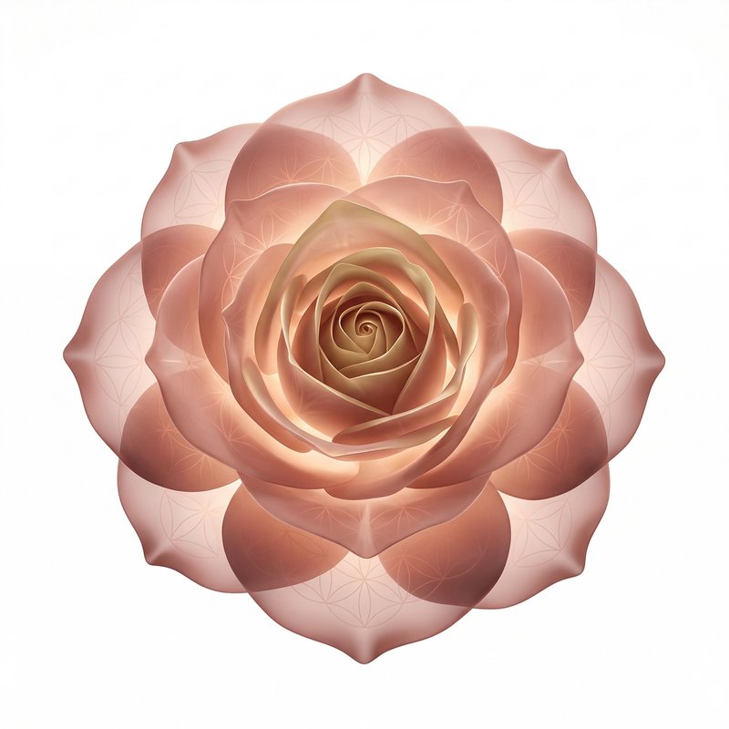
Level 1 of 3
Level 1 of 3
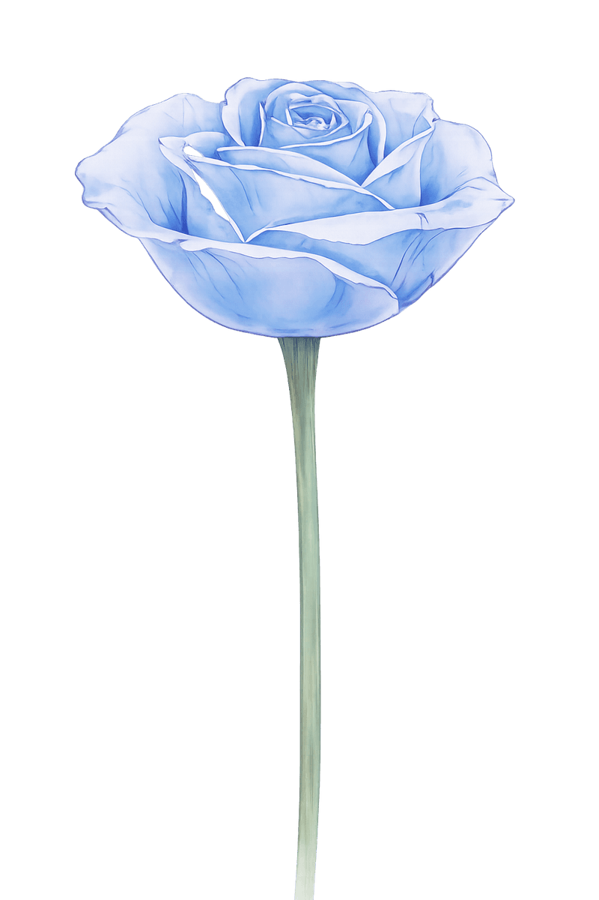
| Getting Ready to Start | 3 | |
| 1 | Grounding Cord | 4 |
| 2 | Golden Sun | 5 |
| 3–5 | Aura Limits, Cord Expansion & Renewal | 6 |
| 6 | Four Roses of Protection, Separation & Observation | 7 |
| 7 | Circuit of the Energies of the Earth & the Cosmos | 8 |
| 8 | Roses to Cleanse & Recover Energy | 9 |
| 9 | Pink Rose | 10 |
| 10 | Sacred Space | 11 |
| To End the Meditation | 12 | |
| Elements of Rose Meditation Level 1 | 13 |
Roses represent the spirit. They absorb all the energies, emotions and situations that don't belong to you or that no longer serve your present moment. We can create and explode them as many times as necessary.
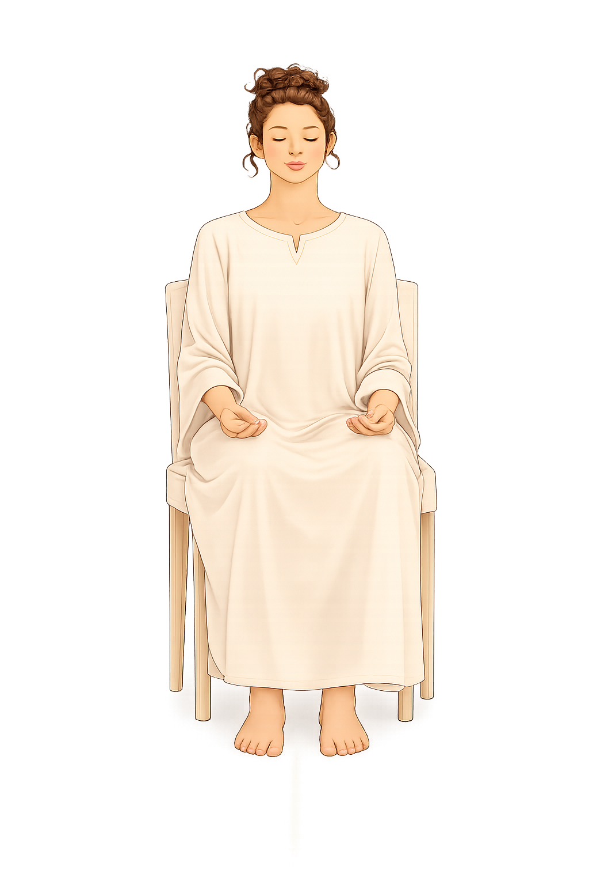
Rose Meditation is a tool for cleansing the aura and the seven main chakras, providing protection and energy balance. Through this technique it is possible to release blocked energies, energies that are not ours, become aware of our life force and deprogram patterns that prevent direct contact with our essence.
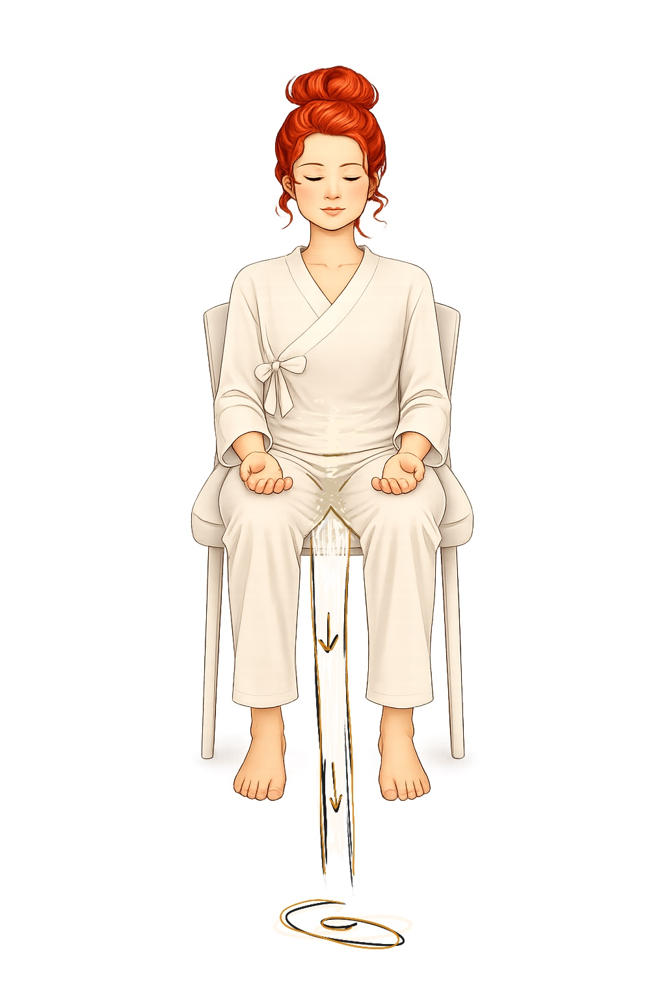
Create a taut grounding cord that runs from your first chakra to the center of the Earth.
The cord eliminates distractions, thoughts and blockages that prevent you from being in the present moment. It brings security, stability and helps to clear energies that are not of your essence.
With time and practice, the cord naturally becomes transparent.
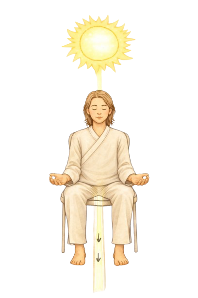
Create a Golden Sun above your head and fill the entire space of your Aura and physical body with the golden light that comes from the Sun. This sun represents the Supreme Being, it raises your vibration and fills the empty energetic spaces with Divine energy after any subtle release of energy.
Fill yourself with the light of the Golden Sun whenever you renew the Meditation, before you finish and at any time of the day when you want to raise your vibration.
The aura is an energy field that surrounds our physical body. It can expand and contract. For Rose Meditation, establish your Aura 20 inches (50 cm) around your entire body.
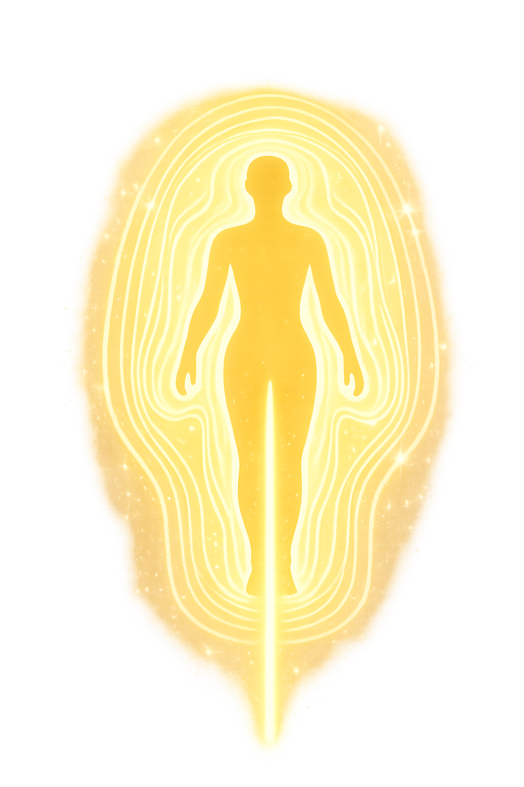
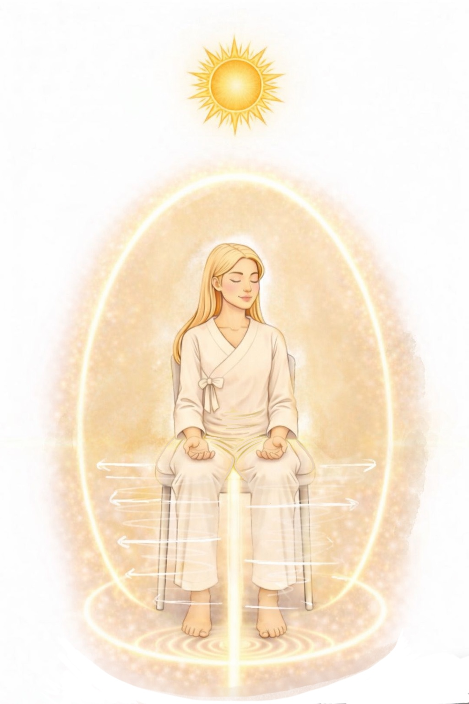
Expand the cord sideways to the width of the Aura, grounding the entire Aura.
Using your imagination, and your cutting tool, cut the grounding cord whenever you need to. This tool will always be the same and will become more powerful every time you use it.
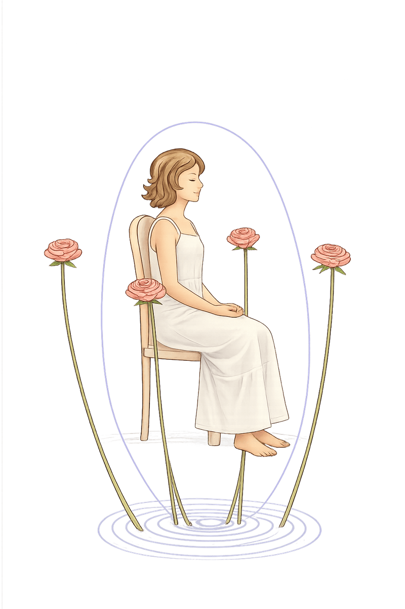
Create four Roses of the color of your choice or the color that comes to you (as long as they are high-vibration) grounded on the outside of your Aura — in front, behind, to the left and to the right. Each Rose fulfills three functions:
On a daily basis, we interact with energies that are not ours. By protecting ourselves, we increase our understanding of the dynamics we experience.
It helps our Aura remain separate from other people's Aura, bringing a clearer perception of our individuality.
When we observe from a neutral state, as a spectator, we develop compassion, not judgment.
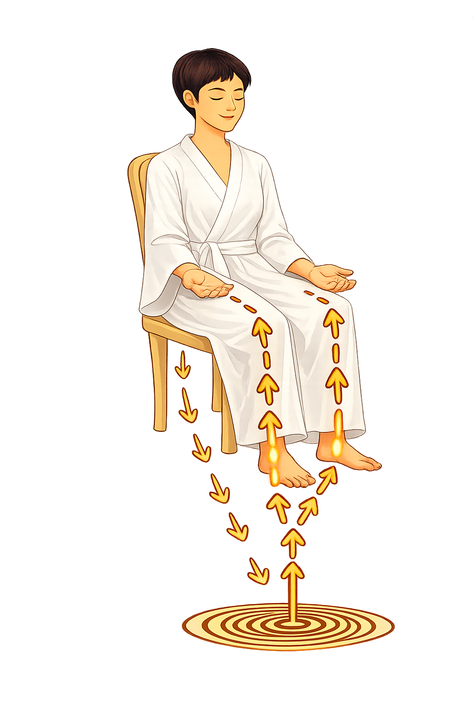
We call on the energy of the Earth to bring the force of transmutation and vitality to the energetic cleansing work we do in the Rose Meditation. It works like an engine that increases the power of everything we do during meditation.
See a copper-golden energy that comes from the center of the Earth and enters through the bottom of the feet, goes up through the legs, passes through the coccyx and descends through the grounding cord. As it passes through the coccyx, 10% of this energy rises to mix with the energy of the cosmos.
The energy of the Cosmos is pure consciousness and it helps us to understand what happens during the Rose Meditation and in our lives. With this active circuit, we can receive information to understand who we are, why we experience the challenges we do, what energies we carry in our Aura, how we absorb them and what adjustments we can make to create a different reality in the future.
See a luminous golden energy that comes from the center of the Universe, enters through the crown chakra, goes down the spine, passes through the coccyx and goes up the front of the body to the throat chakra, where it splits into three parts. One part exits through the crown chakra and the other two parts pass through the upper arms and out through the hands, like a fountain. When it passes through the coccyx, 10% of this energy descends to mix with the Earth's energy.
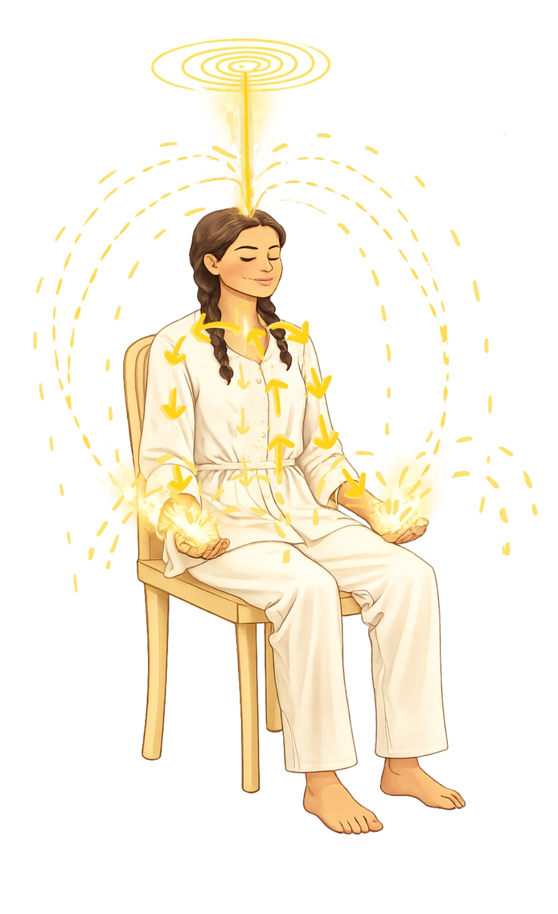
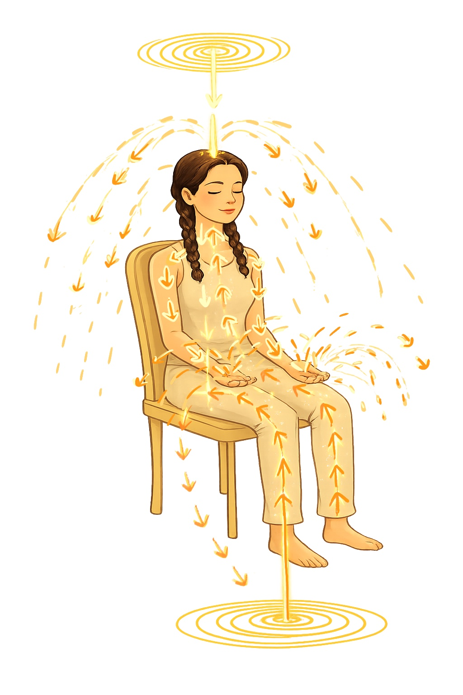
Both the energy of the Earth and of the Cosmos continue to circulate in a constant flow as they enter, pass through their paths and leave. This activation raises our vibration, promotes energetic unblocking, brings up issues to resolve and provides spiritual information.
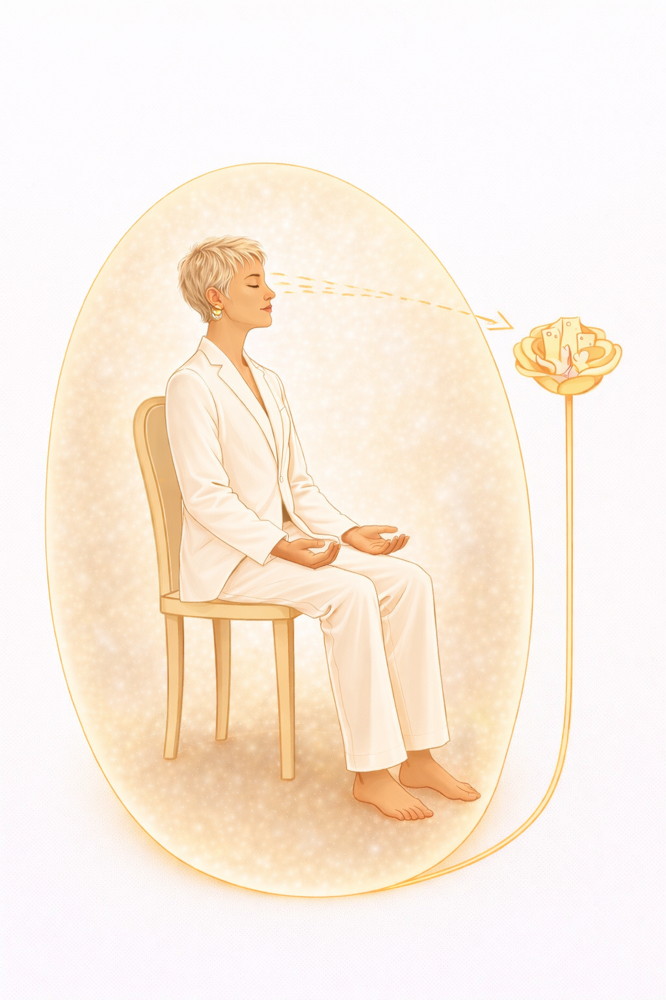
Create a Rose in a high-vibration color, grounded in front of you, outside your Aura. Place any uncomfortable situation on it — thoughts, people, events, fears. Intend for the Rose to suck in energy like a vacuum.
Explode the Rose out of your Aura to cleanse the energy and raise the vibration. Create new Roses as many times as required.
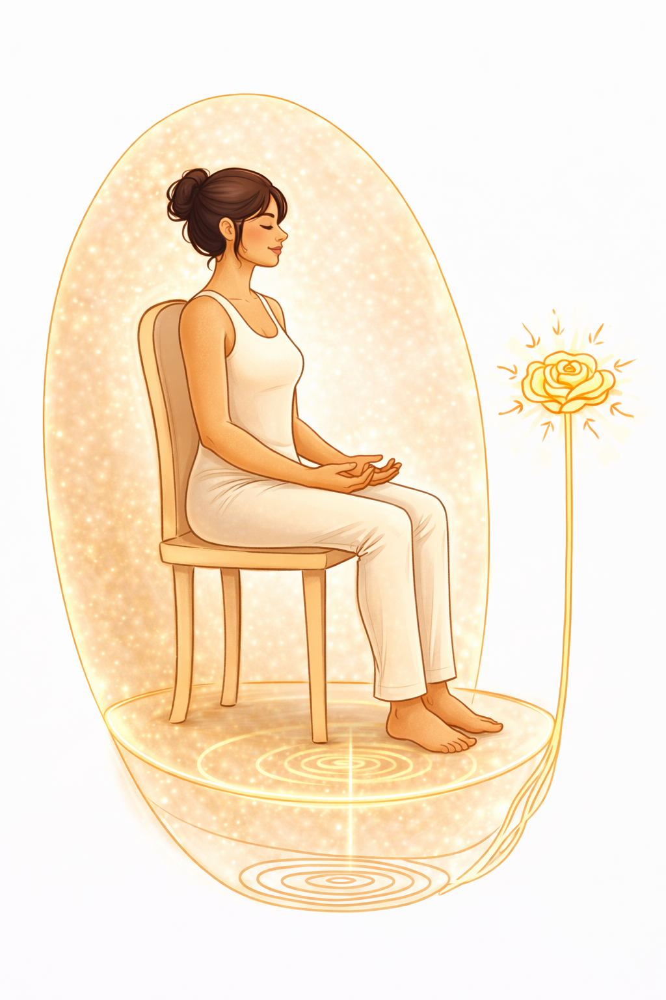
Create another Rose, grounded outside your Aura, and call your energy back. The Rose attracts your energy scattered throughout the universe like a magnet.
Explode the Rose out of your Aura, and receive your high vibrational and purified energy back to you.
You can create and explode as many roses as you feel like. Do the same in positive situations where you want to raise the vibration even more.
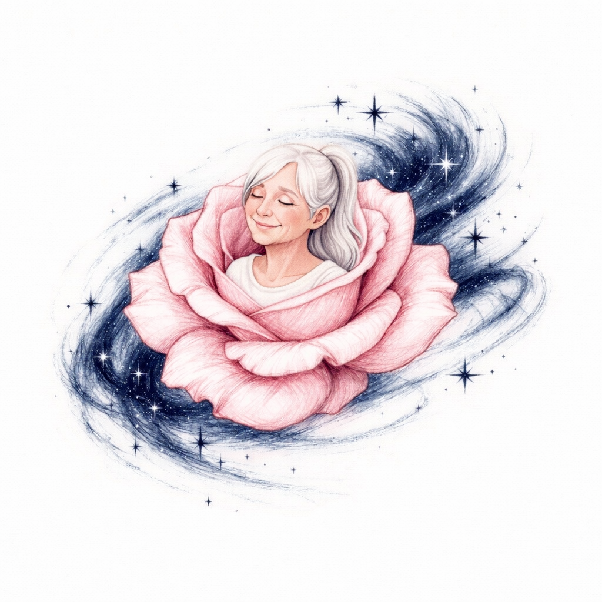
We can offer this rose as a gift, after cleansing another person's energy from our Aura, or mainly for ourselves:
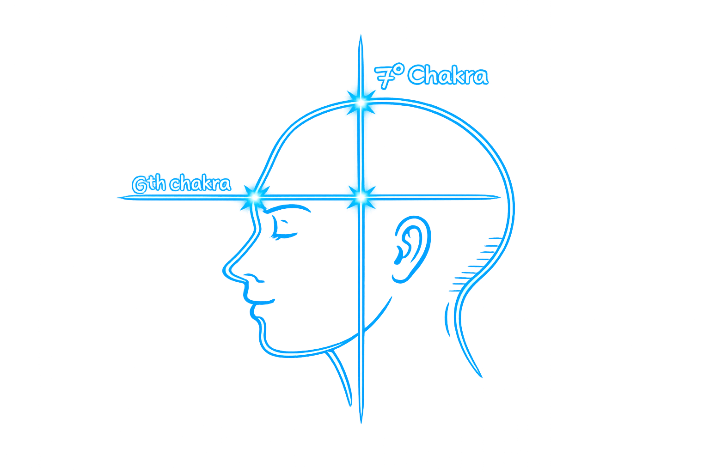
After all techniques are complete, create a Sacred Space around yourself. This is a protective sphere of high-vibration energy that surrounds your entire Aura.
Visualize a golden sphere of light surrounding your Aura. This space belongs only to you — it is your sanctuary. Within it, you are centered, protected, and aligned with your highest vibration.
The Sacred Space activates your 6th and 7th chakras, strengthening your intuition and your connection to the Divine. It is the culmination of the meditation — the moment where all techniques come together in unified awareness.
The Sacred Space is the highest expression of the meditation practice. It represents the integration of all techniques into a single state of aligned consciousness.
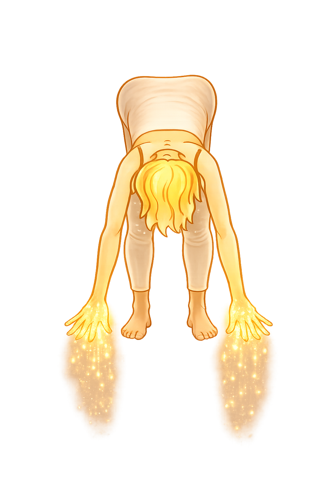
At any time of the day, or whenever we meditate, we blow up the four Roses and create new ones. They help us maintain neutrality.
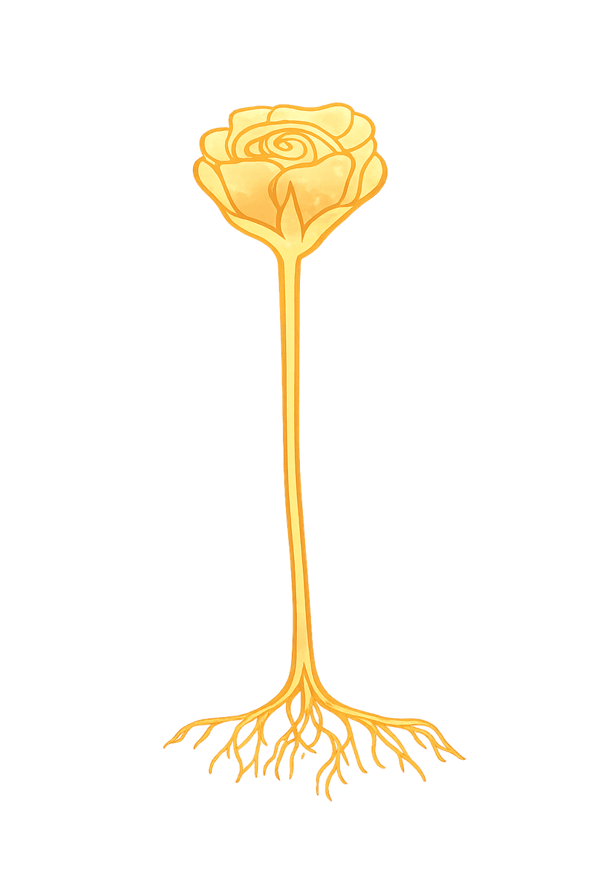
The Rose is a technology of remembrance —
a living practice that reconnects you
with the intelligence already present
within your body, your breath,
and your being.